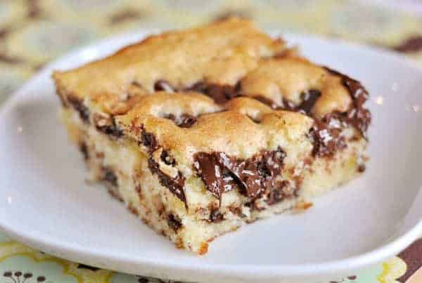

This recipe was obtained from MelsKitchenCafe.
How to Make a Chocolate Chip Cake!

Ingredients
- 2 cups flour
- 1 1/2 cups sugar
- 2 teaspoons baking powder
- 1/2 teaspoon salt flour
- 1 1/3 cups sour cream
- 2/3 cup butter softened
- 1 teaspoon vanilla
- 3 eggs
- 1/2 teaspoon baking soda
Method
- Preheat oven to 350 degrees (325 if using a glass pan).
- Grease a 9 X 13 pan with cooking spray.
- In a large bowl combine all of the cake batter ingredients.
- Mix for 1 minute at low speed; mix 3 minutes at medium speed.
- Pour 1/2 of batter into greased pan.
- Generously sprinkle cinnamon and sugar over batter making sure to get the corners and then sprinkle with 1/2 bag of chocolate chips.
- Pour remaining cake batter on top and spread across bottom layer. Repeat with cinnamon and sugar and chocolate chips.
- Bake for 30-35 minutes or until a toothpick comes out with only a few crumbs (don’t overbake or cake will be dry!).